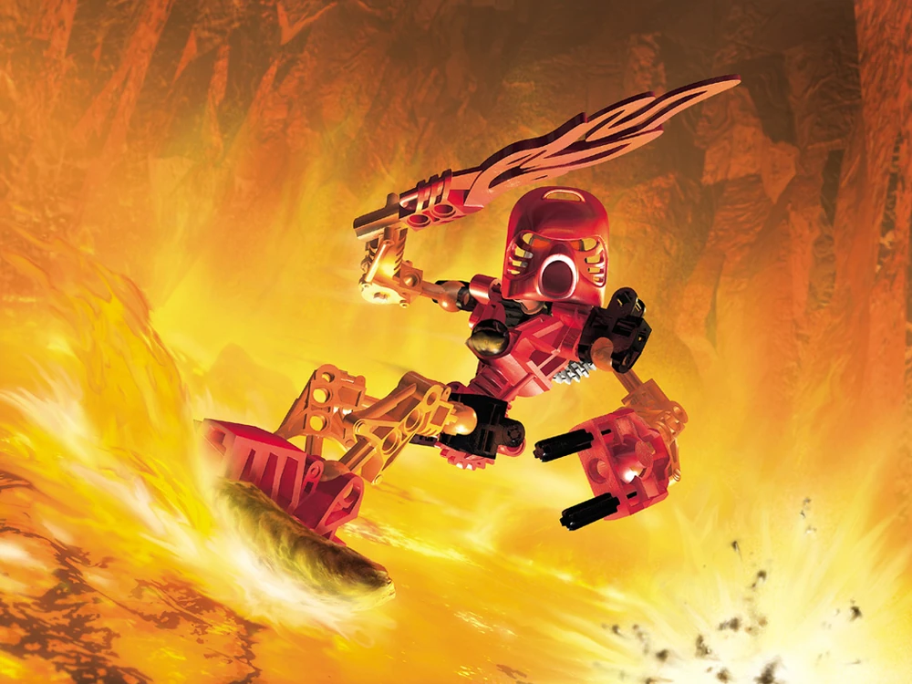
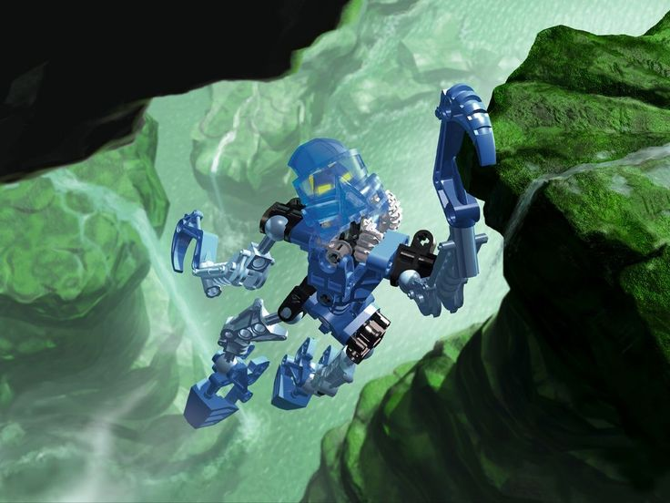
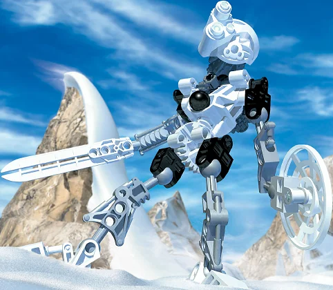
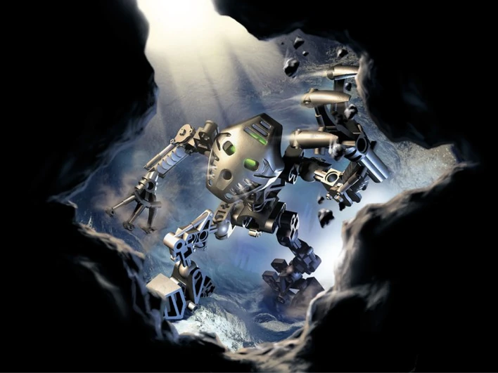
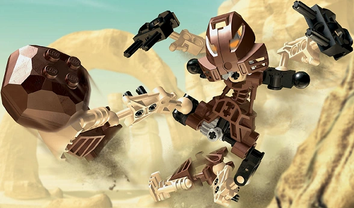
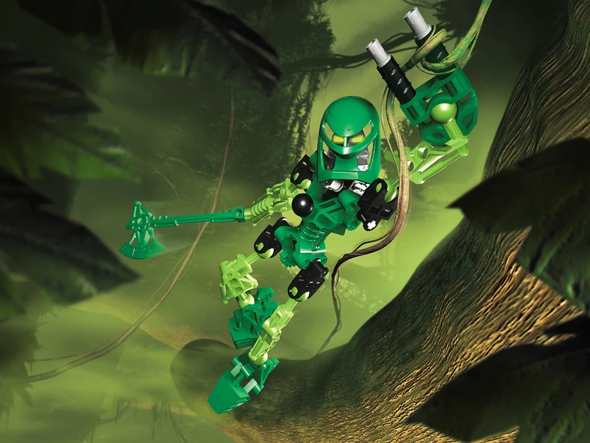

⚔️ Toa — The Heroes of Mata Nui ⚔️
The Toa are legendary warriors chosen to protect the island of Mata Nui and awaken the Great Spirit. Each Toa commands an elemental power and wears a Kanohi mask. The six Toa Mata — Tahu, Gali, Kopaka, Onua, Pohatu, and Lewa — arrived on the island in canisters, with no memory of their past, only knowing their mission: to defeat Makuta and save Mata Nui. After collecting their Golden Kanohi and defeating the Bohrok swarms, they were transformed by Energized Protodermis into the more powerful Toa Nuva. Later, a seventh Toa of Light would emerge — Takanuva.
🔴 Toa Mata — The Original Six
The Toa Mata were the first forms of the six heroes when they arrived on Mata Nui. Each wore a Great Kanohi and wielded a unique weapon. They were destined to find their Great Masks, defeat the infected Rahi, and confront Makuta in his lair beneath the island.

Tahu
🔥 Fire 🔥Weapon: Sword of Fire
Personality: Brave, hot-headed, and impulsive. Tahu is the natural leader of the Toa Mata, though his temper often clashes with Kopaka's cold logic. He values honor above all and will never abandon a friend in need.

Gali
💧 Water 💧Weapon: Hooks
Personality: Wise, compassionate, and patient. Gali serves as the mediator of the Toa, often calming tensions between Tahu and Kopaka. She has a deep connection to the ocean and all living things.

Kopaka
❄️ Ice ❄️Weapon: Ice Blade & Ice Shield
Personality: Cold, calculating, and solitary. Kopaka prefers to work alone and thinks through every situation logically. Despite his aloof exterior, he deeply cares for his fellow Toa and will sacrifice anything to protect them.

Onua
⛰️ Earth ⛰️Weapon: Quake Breakers
Personality: Strong, silent, and wise. Onua is the powerhouse of the Toa, but also one of the most thoughtful. He speaks rarely, but when he does, his words carry great weight. He is fiercely loyal and protective of his team.

Pohatu
🪨 Stone 🪨Weapon: Climbing Claws
Personality: Fast, friendly, and energetic. Pohatu is the most approachable and cheerful of the Toa. He forms strong bonds with the Matoran of Po-Koro and is always the first to crack a joke, even in dire situations.

Lewa
🌪️ Air 🌪️Weapon: Air Axes
Personality: Free-spirited, agile, and talkative. Lewa loves the freedom of the skies and often speaks in a unique, breezy dialect. He is the most agile Toa, able to swing through the jungle canopy with ease.